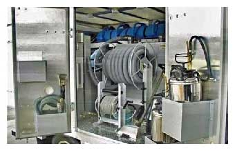
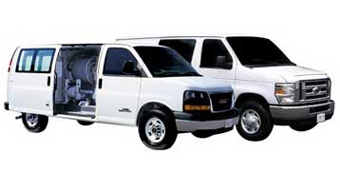

Our Equipment
We use new permanently installed truck mounted, top of the line carpet cleaning machinery. All our trucks are equipped with:
- Two massive water tanks, one fresh and one waste.
- Heat pumps to produce 240 degree steam to sanitize carpets.
- High suction vacuums to extract all liquids from carpeting.
- 300 feet of vacuum and solution hoses.
- Stainless steel wands of all sizes.
- Stair tools.
- Upholstery tools.
- Sub-surface cleaning tools.
- Commercial floor vacuums.
- Carpet grooming tools.
- Turbo drying fans.
- Protective equipment and many other supplies.
To ensure that our clients receive the very best service, we replaces equipment every year. We extend an open invitation to our customers to tour our trucks prior to our services. We keep it clean and well maintained to insure maximum cleaning performance.

